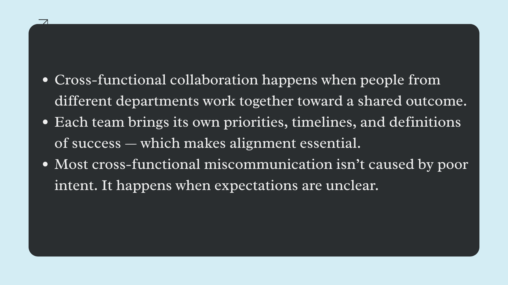

Text

Memory cards
Click on the cards to learn more about the different reasons misalignment occurs in cross-functional collaboration.
{"typeGame":"FlipCards","author":"","randomCards":false,"instructions":"
Click on the cards to learn more about the different reasons misalignment occurs in cross-functional collaboration.
","showMinimize":false,"itinerary":{"showClue":false,"clueGame":"","percentageClue":40,"showCodeAccess":false,"codeAccess":"","messageCodeAccess":""},"cardsGame":[{"url":"","x":0.4691877693965517,"y":0.570245150862069,"author":"","alt":"","audio":"","color":"#000000","backcolor":"#ffffff","eText":"Assumptions%20go%20unspoken","urlBk":"","xBk":0,"yBk":0,"authorBk":"","altBk":"","audioBk":"","colorBk":"#000000","backcolorBk":"#ffffff","eTextBk":"Assumptions%20form%20when%20teams%20believe%20certain%20details%20are%20%E2%80%9Cobvious%E2%80%9D%20or%20already%20agreed%20upon.%20This%20might%20include%20assumptions%20about%20priorities%2C%20timelines%2C%20dependencies%2C%20or%20how%20work%20will%20be%20completed.%20When%20assumptions%20remain%20unspoken%2C%20teams%20unknowingly%20work%20from%20different%20versions%20of%20reality.%20Misalignment%20often%20isn%E2%80%99t%20discovered%20until%20a%20deadline%20approaches%2C%20when%20it%E2%80%99s%20hardest%20to%20fix."},{"url":"","x":0,"y":0,"author":"","alt":"","audio":"","color":"#000000","backcolor":"#ffffff","eText":"Ownership%20Is%20Implied%20Instead%20of%20Defined","urlBk":"","xBk":0,"yBk":0,"authorBk":"","altBk":"","audioBk":"","colorBk":"#000000","backcolorBk":"#ffffff","eTextBk":"In%20cross-functional%20work%2C%20tasks%20often%20fall%20between%20roles%20or%20teams.%20When%20ownership%20is%20implied%20rather%20than%20clearly%20assigned%2C%20everyone%20assumes%20someone%20else%20is%20responsible.%20%20This%20can%20result%20in%20duplicated%20work%20or%20missed%20deliverables.%20Clear%20ownership%20creates%20momentum."},{"url":"","x":0,"y":0,"author":"","alt":"","audio":"","color":"#000000","backcolor":"#ffffff","eText":"Teams%20Have%20Different%20Ideas%20of%20What%20%E2%80%9CDone%E2%80%9D%20Means","urlBk":"","xBk":0,"yBk":0,"authorBk":"","altBk":"","audioBk":"","colorBk":"#000000","backcolorBk":"#ffffff","eTextBk":"Different%20teams%20often%20define%20%E2%80%9Cdone%E2%80%9D%20through%20the%20lens%20of%20their%20own%20responsibilities.%20One%20team%20may%20consider%20work%20complete%20once%20it%20is%20handed%20off%2C%20while%20another%20expects%20additional%20testing%2C%20review%2C%20or%20refinement.%20%20Without%20a%20shared%20definition%20of%20success%2C%20teams%20may%20believe%20they%20have%20completed%20their%20work%20while%20others%20feel%20key%20steps%20are%20missing%20causing%20delays%20and%20frustration.%20"}],"isScorm":0,"textButtonScorm":"Save score","repeatActivity":true,"weighted":100,"textAfter":"%3Cp%3EWhen%20these%20gaps%20aren%u2019t%20addressed%20early%2C%20they%20tend%20to%20surface%20under%20pressure%20%u2014%20often%20close%20to%20a%20deadline.%3C/p%3E","percentajeCards":100,"version":1.3,"type":0,"showSolution":true,"timeShowSolution":3,"time":3,"evaluation":false,"evaluationID":"20260110010651LIWMYY","imgCard":"","id":"20260110200535994JGG","msgs":{"msgSubmit":"Submit","msgClue":"Cool! The clue is:","msgCodeAccess":"Access code","msgPlayAgain":"Play Again","msgPlayStart":"Click here to play","msgScore":"Score","msgWeight":"Weight","msgErrors":"Errors","msgHits":"Hits","msgMinimize":"Minimize","msgMaximize":"Maximize","msgCool":"Cool!","msgFullScreen":"Full Screen","msgExitFullScreen":"Exit Full Screen","msgSuccesses":"Right! | Excellent! | Great! | Very good! | Perfect!","msgFailures":"It was not that! | Incorrect! | Not correct! | Sorry! | Error!","msgNoImage":"No picture question","msgEndGameScore":"Please start the game before saving your score.","msgScoreScorm":"The score can't be saved because this page is not part of a SCORM package.","msgOnlySaveScore":"You can only save the score once!","msgOnlySave":"You can only save once","msgInformation":"Information","msgYouScore":"Your score","msgAuthor":"Authorship","msgOnlySaveAuto":"Your score will be saved after each question. You can only play once.","msgSaveAuto":"Your score will be automatically saved after each question.","msgSeveralScore":"You can save the score as many times as you want","msgYouLastScore":"The last score saved is","msgActityComply":"You have already done this activity.","msgPlaySeveralTimes":"You can do this activity as many times as you want","msgClose":"Close","msgAudio":"Audio","msgPreviousCard":"Previous","msgNextCard":"Next","msgNumQuestions":"Number of cards","msgTrue":"True","msgFalse":"False","msgTryAgain":"__You need at least %s% of correct answers to get the information. Please try again.","mgsAllQuestions":"Questions completed!","msgTrue1":"Right. That's the card.","msgTrue2":"You're wrong. That's not the card.","msgFalse1":"Right. That's not the card.","msgFalse2":"You're wrong. That's the card.","mgsClickCard":"Click on the card","msgEndTime":"Game time is over. Your score is %s.","msgEnd":"Finish","msgEndGameM":"You finished the game. Your score is %s.","msgUncompletedActivity":"Incomplete activity","msgSuccessfulActivity":"Activity: Passed. Score: %s","msgUnsuccessfulActivity":"Activity: Not passed. Score: %s","msgTypeGame":"Memory cards"}}When these gaps aren’t addressed early, they tend to surface under pressure — often close to a deadline.
Your browser is not compatible with this tool.